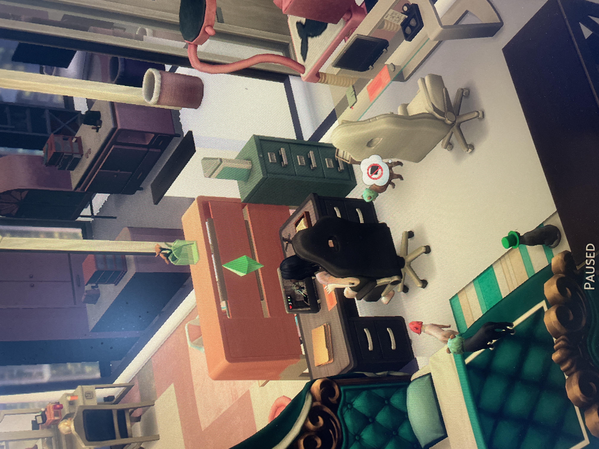

hello ! honestly , this is weird . do people start blog posts with a greeting ? i haven't " blogged " since middle school , when i was an avid tumblr user ( on the fandom side ! )
anyways . . i have a long history with life sims . i've played them in various forms , on pc and mobile , and they have the capacity to be really good or really bad . with the volume of games created these days & the rise of ai created games there will be a lot more . . bad . ai slop , i guess ?
but the sims line ( cough cough , EA ) is aging — as evidenced by getting the dlc requiring more effort than it should . i ended up buying the ones i was missing at a discount , which honestly felt like the right call C: i'll get to enjoy it now , but looking towards the future . . i don't know if newer machines will be able to run old games , nor if new games will even replace them ( see : no roadmap by EA for any more sims 4 content , and confirmation of no sims 5 in the works )
with the bleak news for my favourite life sims' fates , i've been looking to other games for similar experiences . project zomboid is one of them ! i've always liked zombie survival , and from perusing r/lifesim the consensus is that it does fit the category — so that's probably the direction i'll head in .
i wish i could be creative enough to see games like minecraft as life sim potential . i feel like with a lot of mods that add roleplay capabilities ( marriage , quests , etc ) it theoretically could be one . . but i think for me an integral part of the life sim experience is playing and controlling multiple characters from a third-person perspective , not being one of them (・ω・)？ even with a lot of mods any roleplay would still be constricted to the limitations of the narratives written by the mod creators — so i wouldn't be able to recreate the endless freedom afforded by games like the sims . ( i might still try to make modded minecraft work for this ! it just might be lonely . . )
when friends have watched me play the sims the impression i've given them is that of someone " playing dolls " . which isn't inherently wrong , but does make me wonder about a " childish " aspect to life sims . . which is instantly squashed by the fact that games as a whole could be seen as childish but aren't , and life sims like the sims similarly are notoriously played with many adult themes implemented by users . hell , the sims 1 was known for being super unhinged and a lot of people found it to be just as memorable because of that ! ( we've gotten to the " berry thinking out loud " part of this yap sesh )
TL;DR life sims cool . future of life sims uncertain . berry looking for her personal next life sim step , while enjoying the sims 3 for the first time in close to a decade ! ₍ᐢ•ᴗ•ᐢ₎ until next time :3
